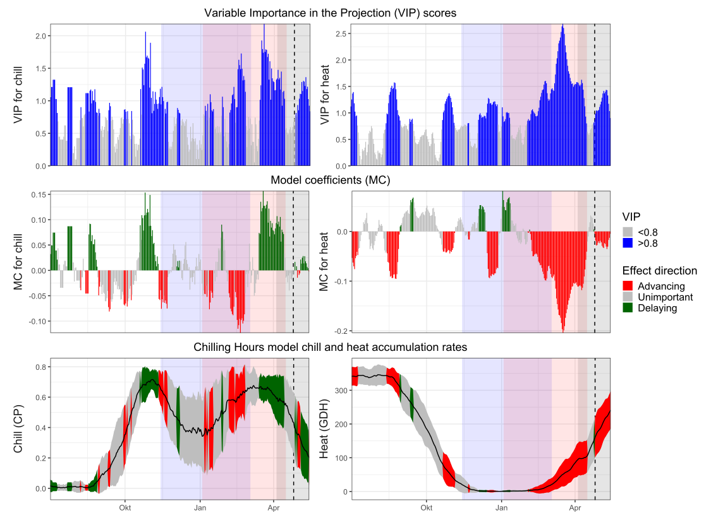
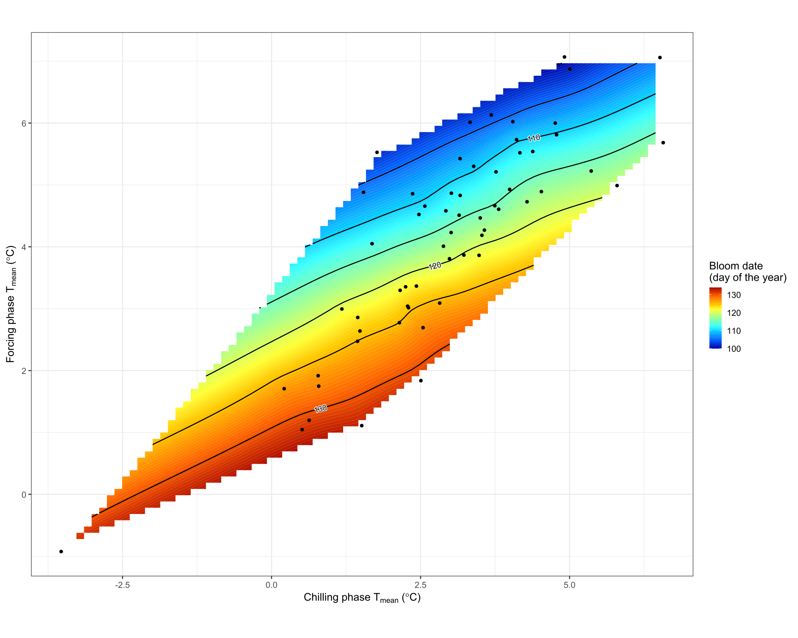
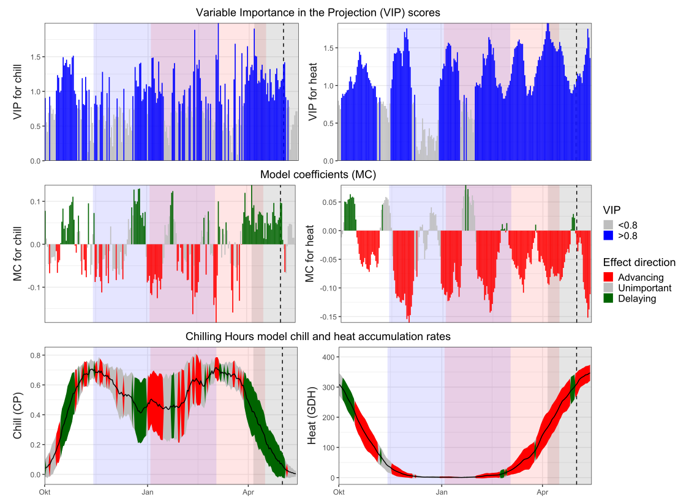
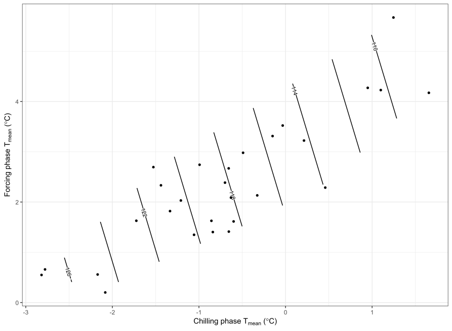
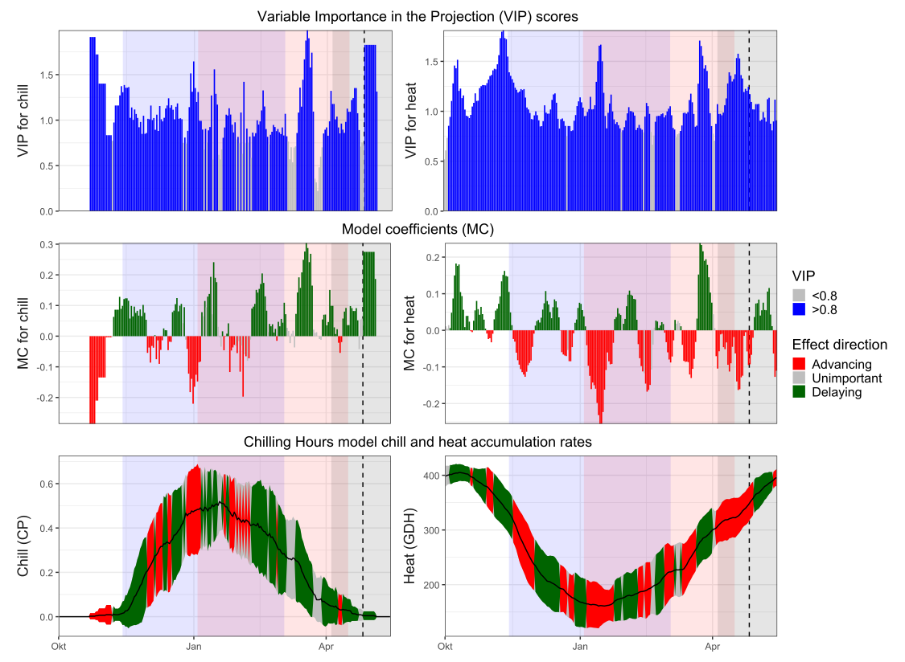
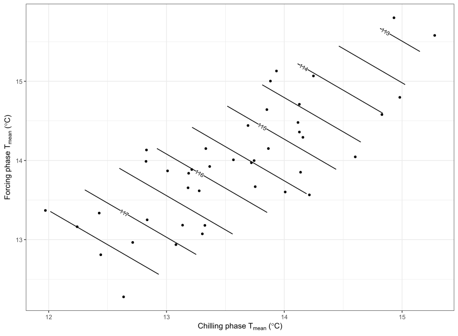

24 Chapter 26 - Evaluating PLS outputs
This chapter is more about interpretation, rather than doing something new in R. I used the Boskoop dataset and the weatherdata of Klein Altendorf since it wasnt specified, that we should use the data of our location we choose before, I worked with the patched data for Campus Klein-Altendorf. In the end I used the very same script as the script used in chapter 26 combined with the PLS function from Chapter 23. I also did some adjustments to the rendering of the plot, because some parts turned out very small, when I rendered them in a higher resolution.
24.1 Questions
Reproduce the analysis for the ‘Roter Boskoop’ dataset.
We’ve looked at data from a number of locations so far. How would you expect this surface plot to look like in Beijing? And how should it look in Tunisia?
24.2 Answers
Klein Altendorf, Germany


Looking at the plot, we can see that we have rather strange VIP values for the chilling. There is not really a big coherent section for chill. When it comes to heat VIP, you can see it better. From January on until the end of April we have a section with a lot og heat.
The same pattern can be seen in the Model coefficients (MC). For chill we dont have a big section in red, but we have very little indicators for a delaying bloom. For heat it looks different. The heat, and the aspect of “advancing”, increases from beginning of January until the begging of April. Therefore the conclusion is: Chill accumulation occurs mainly in winter, whereas heat accumulation begins in early spring, supporting the identification of chilling and forcing phases.
Beijing, China


Beijing has very cold winters, so the chilling requirement of temperate fruit trees will almost always be fulfilled. Because dormancy release is reliably achieved, flowering no longer depends strongly on winter temperature. Instead, bloom timing mainly depends on how warm the spring is and how fast heat accumulates.
In the surface plot this means winter temperature has only a weak effect, while spring temperature has a strong effect. The contour lines would therefore appear almost vertical. Different winter temperatures would lead to similar bloom dates, but small differences in spring temperature would shift flowering noticeably.
Therefore, in Beijing the system is mainly controlled by the forcing phase.
Sfax, Tunisia


Tunisia has mild winters, and the chilling requirement is often not completely fulfilled. In this case trees remain partly dormant and cannot respond properly to spring warming until enough chilling has accumulated. As a result, winter temperature becomes the main factor determining bloom timing.
In the surface plot, bloom date would vary strongly with winter temperature but only weakly with spring temperature. The contour lines would therefore appear almost horizontal. Even a warm spring could not fully compensate for insufficient winter chilling.
Thus, in Tunisia flowering is mainly limited by the chilling phase.
24.3 Code
Code
library(chillR)
library(fields)
library(reshape2)
library(metR)
library(ggplot2)
library(colorRamps)
library(tidyverse)
Bosk_first <- read_tab("data/Roter_Boskoop_bloom_1958_2019.csv") %>%
select(Pheno_year, First_bloom) %>%
mutate(Year = as.numeric(substr(First_bloom, 1, 4)),
Month = as.numeric(substr(First_bloom, 5, 6)),
Day = as.numeric(substr(First_bloom, 7, 8))) %>%
make_JDay() %>%
select(Pheno_year,
JDay) %>%
rename(Year = Pheno_year,
pheno = JDay)
temps <- read_tab("data/Beijing_weather.csv")
temps_hourly <- temps %>%
stack_hourly_temps(latitude = 34.4)
daychill <- daily_chill(hourtemps = temps_hourly,
running_mean = 1,
models = list(Chilling_Hours = Chilling_Hours,
Utah_Chill_Units = Utah_Model,
Chill_Portions = Dynamic_Model,
GDH = GDH)
)
plscf <- PLS_chill_force(daily_chill_obj = daychill,
bio_data_frame = Bosk_first,
split_month = 6,
chill_models = "Chill_Portions",
heat_models = "GDH",
runn_means = 11)
# Function from before
plot_PLS_chill_force(plscf,
chill_metric = "Chill_Portions",
heat_metric = "GDH",
chill_label = "CP",
heat_label = "GDH",
chill_phase = c(-48, 62),
heat_phase = c(3, 105.5))
# Further processing
chill_phase <- c(317, 62)
heat_phase <- c(3, 105.5)
chill <- tempResponse(hourtemps = temps_hourly,
Start_JDay = chill_phase[1],
End_JDay = chill_phase[2],
models = list(Chill_Portions = Dynamic_Model),
misstolerance = 10)
heat <- tempResponse(hourtemps = temps_hourly,
Start_JDay = heat_phase[1],
End_JDay = heat_phase[2],
models = list(GDH = GDH))
# Histogramm for chill
ggplot(data = chill,
aes(x = Chill_Portions)) +
geom_histogram() +
ggtitle("Chill accumulation during endodormancy (Chill Portions)") +
xlab("Chill accumulation (Chill Portions)") +
ylab("Frequency between 1958 and 2019") +
theme_bw(base_size = 12)
# Histogramm for Heat
chill_requirement <- mean(chill$Chill_Portions)
chill_req_error <- sd(chill$Chill_Portions)
heat_requirement <- mean(heat$GDH)
heat_req_error <- sd(heat$GDH)
# Plotting
chill_phase <- c(317, 62)
heat_phase <- c(360, 105) # note that the end date here was rounded
# to an integer number, so that a proper
# axis label can be generated.
mpt <- make_pheno_trend_plot(weather_data_frame = temps,
pheno = Bosk_first,
Start_JDay_chill = chill_phase[1],
End_JDay_chill = chill_phase[2],
Start_JDay_heat = heat_phase[1],
End_JDay_heat = heat_phase[2],
outpath = "data/",
file_name = "pheno_trend_plot",
plot_title = "Impacts of chilling and forcing temperatures on pear phenology",
image_type = "png",
colorscheme = "normal")
mpt
# Calculation
mean(chill$Chill_Portions)
sd(chill$Chill_Portions)
mean(heat$GDH)
sd(heat$GDH)
# Function
mean_temp_period <- function(
temps,
start_JDay,
end_JDay,
end_season = end_JDay)
{ temps_JDay <- make_JDay(temps) %>%
mutate(Season =Year)
if(start_JDay > end_season)
temps_JDay$Season[which(temps_JDay$JDay >= start_JDay)]<-
temps_JDay$Year[which(temps_JDay$JDay >= start_JDay)]+1
if(start_JDay > end_season)
sub_temps <- subset(temps_JDay,
JDay <= end_JDay | JDay >= start_JDay)
if(start_JDay <= end_JDay)
sub_temps <- subset(temps_JDay,
JDay <= end_JDay & JDay >= start_JDay)
mean_temps <- aggregate(sub_temps[, c("Tmin", "Tmax")],
by = list(sub_temps$Season),
FUN = function(x) mean(x,
na.rm=TRUE))
mean_temps[, "n_days"] <- aggregate(sub_temps[, "Tmin"],
by = list(sub_temps$Season),
FUN = length)[,2]
mean_temps[, "Tmean"] <- (mean_temps$Tmin + mean_temps$Tmax) / 2
mean_temps <- mean_temps[, c(1, 4, 2, 3, 5)]
colnames(mean_temps)[1] <- "End_year"
return(mean_temps)
}
mean_temp_chill <- mean_temp_period(temps = temps,
start_JDay = chill_phase[1],
end_JDay = chill_phase[2],
end_season = 60)
mean_temp_heat <- mean_temp_period(temps = temps,
start_JDay = heat_phase[1],
end_JDay = heat_phase[2],
end_season = 60)
# Combinig
mean_temp_chill <-
mean_temp_chill[which(mean_temp_chill$n_days >=
max(mean_temp_chill$n_days)-1),]
mean_temp_heat <-
mean_temp_heat[which(mean_temp_heat$n_days >=
max(mean_temp_heat$n_days)-1),]
mean_chill <- mean_temp_chill[, c("End_year",
"Tmean")]
colnames(mean_chill)[2] <- "Tmean_chill"
mean_heat <- mean_temp_heat[,c("End_year",
"Tmean")]
colnames(mean_heat)[2] <- "Tmean_heat"
phase_Tmeans <- merge(mean_chill,
mean_heat,
by = "End_year")
pheno <- Bosk_first
colnames(pheno)[1] <- "End_year"
Tmeans_pheno <- merge(phase_Tmeans,
pheno,
by = "End_year")
head(Tmeans_pheno)
# Plotting
library(fields)
k <- Krig(x = as.matrix(
Tmeans_pheno[,
c("Tmean_chill",
"Tmean_heat")]),
Y = Tmeans_pheno$pheno)
pred <- predictSurface(k)
colnames(pred$z) <- pred$y
rownames(pred$z) <- pred$x
library(reshape2)
melted <- melt(pred$z)
library(metR)
library(colorRamps)
colnames(melted) <- c("Tmean_chill",
"Tmean_heat",
"value")
ggplot(melted,
aes(x = Tmean_chill,
y = Tmean_heat,
z = value)) +
geom_contour_fill(bins = 100) +
scale_fill_gradientn(colours = alpha(matlab.like(15)),
name = "Bloom date \n(day of the year)") +
geom_contour(col = "black") +
geom_point(data = Tmeans_pheno,
aes(x = Tmean_chill,
y = Tmean_heat,
z = NULL),
size = 1.5) +
geom_text_contour(stroke = 0.1) +
ylab(expression(paste("Forcing phase ",
T[mean],
" (",
degree,
"C)"))) +
xlab(expression(paste("Chilling phase ",
T[mean],
" (",
degree,
"C)"))) +
theme_bw(base_size = 15)
# And again, but all in one as a function
pheno_trend_ggplot <- function(temps,
pheno,
chill_phase,
heat_phase,
phenology_stage = "Bloom")
{
library(fields)
library(reshape2)
library(metR)
library(ggplot2)
library(colorRamps)
# first, a sub-function (function defined within a function) to
# compute the temperature means
mean_temp_period <- function(temps,
start_JDay,
end_JDay,
end_season = end_JDay)
{ temps_JDay <- make_JDay(temps) %>%
mutate(Season = Year)
if(start_JDay > end_season)
temps_JDay$Season[which(temps_JDay$JDay >= start_JDay)] <-
temps_JDay$Year[which(temps_JDay$JDay >= start_JDay)]+1
if(start_JDay > end_season)
sub_temps <- subset(temps_JDay,
JDay <= end_JDay | JDay >= start_JDay)
if(start_JDay <= end_JDay)
sub_temps <- subset(temps_JDay,
JDay <= end_JDay & JDay >= start_JDay)
mean_temps <- aggregate(sub_temps[,
c("Tmin",
"Tmax")],
by = list(sub_temps$Season),
FUN = function(x) mean(x,
na.rm = TRUE))
mean_temps[, "n_days"] <- aggregate(sub_temps[,
"Tmin"],
by = list(sub_temps$Season),
FUN = length)[,2]
mean_temps[,"Tmean"] <- (mean_temps$Tmin + mean_temps$Tmax) / 2
mean_temps <- mean_temps[, c(1, 4, 2, 3, 5)]
colnames(mean_temps)[1] <- "End_year"
return(mean_temps)
}
mean_temp_chill <- mean_temp_period(temps = temps,
start_JDay = chill_phase[1],
end_JDay = chill_phase[2],
end_season = heat_phase[2])
mean_temp_heat <- mean_temp_period(temps = temps,
start_JDay = heat_phase[1],
end_JDay = heat_phase[2],
end_season = heat_phase[2])
mean_temp_chill <-
mean_temp_chill[which(mean_temp_chill$n_days >=
max(mean_temp_chill$n_days)-1),]
mean_temp_heat <-
mean_temp_heat[which(mean_temp_heat$n_days >=
max(mean_temp_heat$n_days)-1),]
mean_chill <- mean_temp_chill[, c("End_year",
"Tmean")]
colnames(mean_chill)[2] <- "Tmean_chill"
mean_heat<-mean_temp_heat[,c("End_year",
"Tmean")]
colnames(mean_heat)[2] <- "Tmean_heat"
phase_Tmeans <- merge(mean_chill,
mean_heat,
by = "End_year")
colnames(pheno) <- c("End_year",
"pheno")
Tmeans_pheno <- merge(phase_Tmeans,
pheno,
by="End_year")
# Kriging interpolation
k <- Krig(x = as.matrix(Tmeans_pheno[,c("Tmean_chill",
"Tmean_heat")]),
Y = Tmeans_pheno$pheno)
pred <- predictSurface(k)
colnames(pred$z) <- pred$y
rownames(pred$z) <- pred$x
melted <- melt(pred$z)
colnames(melted) <- c("Tmean_chill",
"Tmean_heat",
"value")
ggplot(melted,
aes(x = Tmean_chill,
y = Tmean_heat,
z = value)) +
geom_contour_fill(bins = 60) +
scale_fill_gradientn(colours = alpha(matlab.like(15)),
name = paste(phenology_stage,
"date \n(day of the year)")) +
geom_contour(col = "black") +
geom_text_contour(stroke = 0.09) +
geom_point(data = Tmeans_pheno,
aes(x = Tmean_chill,
y = Tmean_heat,
z = NULL),
size = 1.5) +
ylab(expression(paste("Forcing phase ",
T[mean],
" (",
degree,
"C)"))) +
xlab(expression(paste("Chilling phase ",
T[mean],
" (",
degree,
"C)"))) +
theme_bw(base_size = 15)
}
chill_phase <- c(317, 62)
heat_phase <- c(360, 105.5)
pheno_trend_ggplot(temps = temps,
pheno = Bosk_first,
chill_phase = chill_phase,
heat_phase = heat_phase,
phenology_stage = "Bloom")